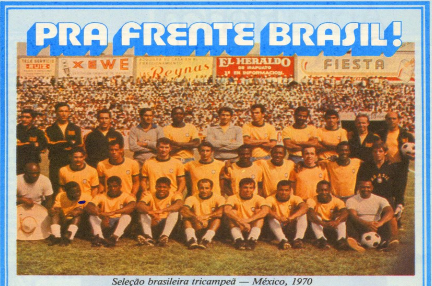

Caderno 1 • Variedades e Esportes
Pra Frente Brasil!
Seleção brasileira tricampeã — México, 1970
Em clima de Copa do Mundo, o Almanaque relembra a trajetória do Brasil nas Copas e destaca a esperança de conquistar mais um título mundial.
Acervo Histórico • Almanaques de Farmácia
Desenvolvido por Felipe Vitorino Moretti — ADS Santa Casa de São Paulo

Caderno 1 • Variedades e Esportes
Em clima de Copa do Mundo, o Almanaque relembra a trajetória do Brasil nas Copas e destaca a esperança de conquistar mais um título mundial.
Para nós brasileiros, isto basta. Nestes próximos seis meses, este será um assunto obrigatório no trabalho, em casa, na roda de amigos e em todos os lugares.
Todos comentam a escalação, o melhor esquema de jogo e a emoção do grito de gol preso na garganta até a explosão: GOOOOL!
O Almanaque relembra que o Brasil já havia sofrido em 1950, se alegrado em 1958, exultado em 1962 e vibrado com o tricampeonato em 1970, no México. O grande desejo registrado no texto era ver o Brasil conquistar novamente o título mundial.
O texto afirma que esporte, higiene, saúde e bem-estar social também são partes importantes para uma nação manter-se forte e feliz.
O trecho termina em tom otimista, desejando que o Brasil tenha um ano melhor, com conquistas e esperança para o povo brasileiro.